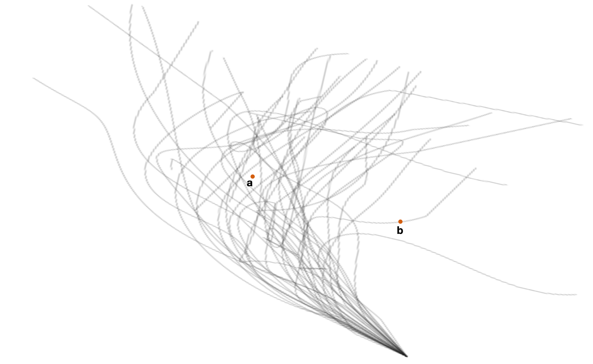
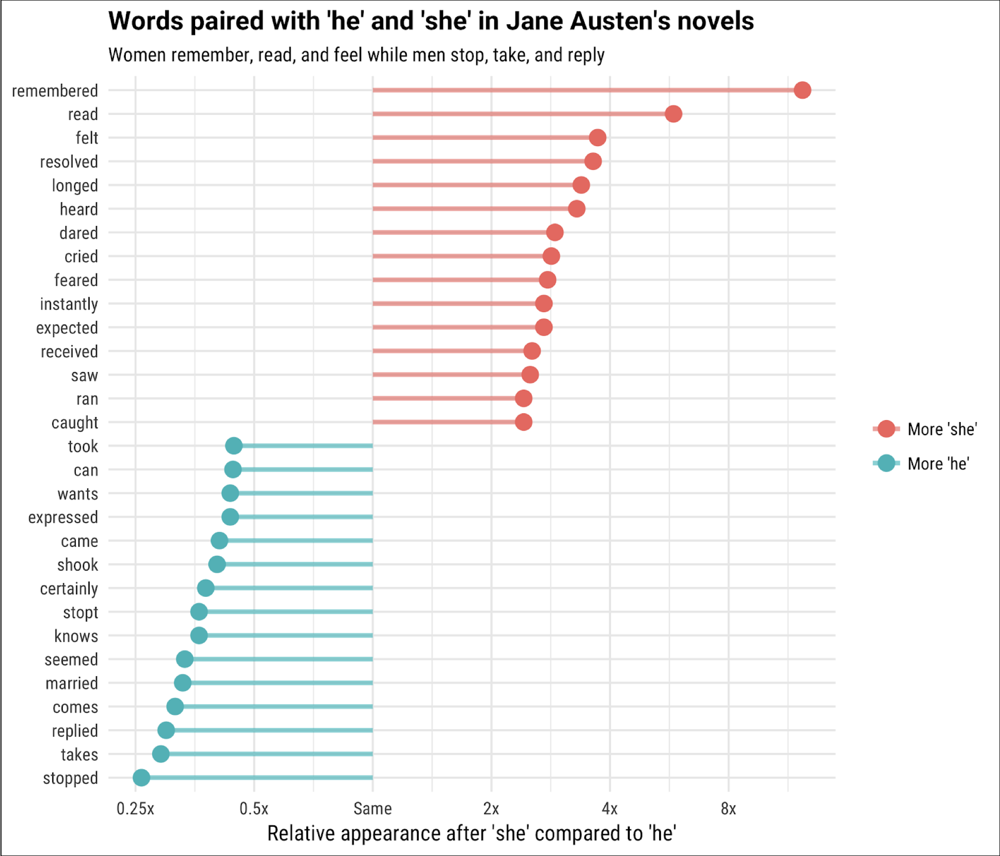
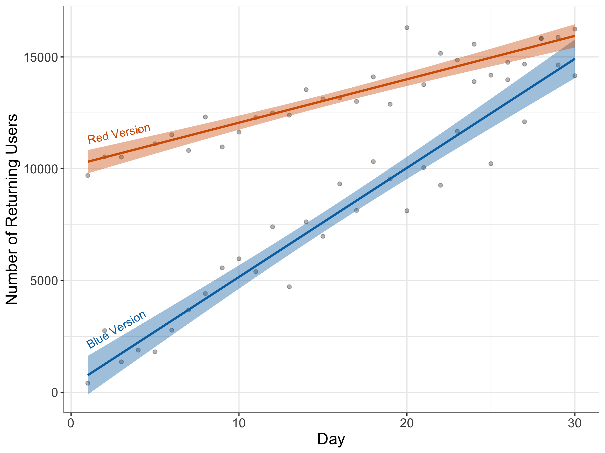
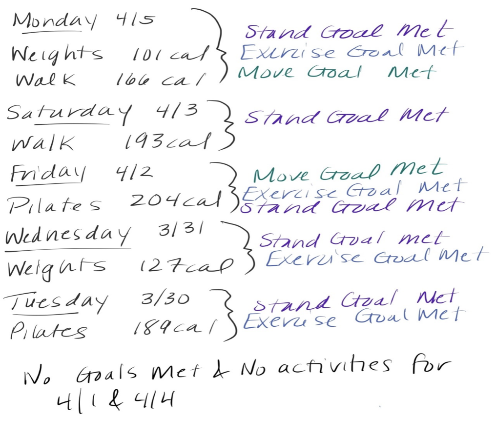

Appendix A: Assessment Prototype
Storm Paths
The figure below shows a forecast after simulating 50 potential paths for a large storm. The two points (a) and (b) represent two cities. Which city is more likely to be hit by the storm? Explain.

a. City a
b. City bMovie Budgets 1
A data scientist at IMDb has been given a dataset comprised of the revenues and budgets for 2,349 movies made between 1986 and 2016.
Suppose they want to compare several distributional features of the budgets among four different genres—Horror, Drama, Action, and Animation. To do this, they create the following plots.

Fill in the following table by placing a checkmark in the cells corresponding to the attributes of the data that can be determined by examining each of the plots.
| Plot A | Plot B | Plot C | Plot D | |
|---|---|---|---|---|
| Mean | [ ] | [ ] | [ ] | [ ] |
| Median | [ ] | [ ] | [ ] | [ ] |
| IQR | [ ] | [ ] | [ ] | [ ] |
| Shape | [ ] | [ ] | [ ] | [ ] |
Movie Budgets 2
For each genre, the data scientist also fitted a regression line to model the relationship between movies’ budgets and their revenues. A scatterplot of this relationship, along with the fitted regression line, is shown for each of the four genres below. For which genre would the fitted regression model produce the highest \(R^2\) value? Explain.

Application Screening
You are working on a team that is making a deterministic model to quickly screen through applications for a new position at the company. Based on employment laws, your model may not include variables such as age, race, and gender, which could be potentially discriminatory.
Your colleague suggests including a rule that eliminates candidates with more than 20 years of previous work experience, because they may have high salary expectations. Are there ethical implications of using this variable to select candidates? Explain your answer.
Banana Conclusions
Data scientists at FiveThirtyEight administered a food frequency questionnaire. With 54 complete responses they found that people who ate bananas tended to score higher on the SAT verbal section than the SAT math section (\(p=0.0073\)). An article reporting the results of this study has the headline, “Eat more bananas to score higher on the SAT verbal section”. Is this headline accurate, or could it be misleading? Explain.
COVID Map
The visualization below displays the 14-day rolling average of new COVID-19 cases January 1 - August 31, 2021 in the United States. Each plot represents a state or Washington, D.C., and is labeled using the state’s abbreviation (e.g., MA = Massachusetts). The shaded area under each curve represents the increase in new cases since the state’s minimum point in 2021. This is a recreation of a similar plot that originally appeared in the New York Times.

What do we learn from this plot about COVID-19 cases in the US?
Compare KY (Kentucky) in the South region to CA (California) in the West region. Based on this plot, can we conclude there was a difference in overall number of COVID cases in KY and CA in August 2021? Explain.
He Said She Said
For each of the following items, indicate whether the statement is TRUE, FALSE, or whether you would need additional information to determine this. If you can determine the statement is true/false, indicate the evidence that you used to make that determination. If you need additional information to make that determination, indicate what else you would need.

Men in Austen’s novels are more likely to have ‘dared’, ‘expected’, and ‘ran’ than women.
- True
- False
- Need additional information to determine this
Women in Austen’s novels are more likely to have ‘remembered’, ‘felt’, and ‘cried’ than men.
- True
- False
- Need additional information to determine this
Women in Austen’s novels are more likely to have ‘remembered’ than ‘feared’.
- True
- False
- Need additional information to determine this
Build-a-Plot
The following is an intensity map of the unemployment rate among adults in the counties in the United States (based on data from 2019).

Indicate which of the following data you need to recreate this map? (Select all that apply.)
- [ ] County boundaries
- [ ] Unemployment rate in each county
- [ ] Number of adults living in each county
- [ ] Number of unemployed adults living in each county
- [ ] Total population of the countyDisease Screening
COVID screening tests are not 100% accurate. It’s possible to have COVID but not test positive or not have COVID but test positive for it. The following three visualizations display the outcomes of a COVID screening test with a sensitivity (true positive rate) of 98.1% and specificity (true negative rate) of 99.6% in a population where 5% of the individuals have COVID.
We are also interested in the false positive (individuals classified as with COVID, who don’t actually have it) and false negative (individuals classified as without COVID, but who do actually have it) rates.

Fill in the following table by placing a checkmark in the cells corresponding to the attributes of the data that can be determined by examining each of the plots.
| Plot A | Plot B | Plot C | |
|---|---|---|---|
| Sensitivity | [ ] | [ ] | [ ] |
| Specificity | [ ] | [ ] | [ ] |
| False positive rate | [ ] | [ ] | [ ] |
| False negative rate | [ ] | [ ] | [ ] |
Realty Tree
A realtor has trained a regression tree to predict the price of a house from features such as number of bedrooms, number of bathrooms, number of fireplaces, and size of the living area.
What price would the tree predict for a house with 3200 ft.2 of living area, 1.5 bathrooms, and 1 fireplace?
- $262,972
- $326,267
- $501,876
- Can’t be determined from the information given.
What price would the tree predict for a house with 1200 ft.2 of living area and 1.5 bathrooms?
- $151,424
- $184,248
- $210,950
- Can’t be determined from the information given.
Website Testing
An e-commerce company is working on their website design and is interested in knowing whether having the website mainly in blue or red would lead to better business outcomes. One outcome they are measuring is the number of returning users to the website. They design two versions of the website one in blue and the other in red. A random half of the visitors see the website in blue and the other half see it in red. The plot shows the number of returning users per day for the two different versions of the website.

Indicate whether each of the following conclusions are valid. Explain.
Over time the company is getting more returning users regardless of the version of the website.
a. Valid
b. Invalid
c. Cannot determine this from the plot.On the 31st day, the blue version of the website is expected to have higher number of returning users.
a. Valid
b. Invalid
c. Cannot determine this from the plot.On the 60th day, the blue version of the website is expected to have higher number of returning users.
a. Valid
b. Invalid
c. Cannot determine this from the plot.Image Recognition
A data science student wants to create an image recognition algorithm to identify whether a university professor belongs to a department in the sciences or not. To do this, she collects data by scraping several university photo archives of university faculty. She labels faculty in the photos as “Sciences” or “Not sciences”. The images below depict a small representative sample of her data.
Sciences
Not sciences
The data science student plans to use these photos of current university faculty to predict whether they are scientists. What concerns might you have about the predictions from this algorithm? Explain.
Data Confidentiality
A newspaper reports on the results of a survey from a small (<2000 student) university. The university agrees to have the data released to the public so long as the students’ identities and academic standing information are kept confidential. Select the safe combinations of variables that are unlikely to identify any individual students. Explain.
- Class year and sports played
- Student ID and dorm ZIP code
- GPA and major
- Birth date and phone number
- None of the above
Activity Journal
Below is data that was recorded in an activity journal.

A data scientist reformats the data into a table so that each variable represented in the data is recorded in a single column. Describe what each of the columns of this table will contain, as well as what each row or observation of the table will represent.
Movie Wrangling
The table below provides data about 10 movies released in the United States. It provides data on the movie’s title (title), the movie’s director (director), the date the movie was released (release_date), the season the movie was released (season), the worldwide gross intake in U.S. dollars (gross), the cleaned version of the worldwide gross intake in U.S. dollars (gross_clean), and whether or not the movie won the Best Picture Oscar (best_picture).
| title | director | release_date | season | gross | gross_clean | best_picture |
|---|---|---|---|---|---|---|
| Almost Famous | Cameron Crowe | 22 September 2000 | Fall | $47.39M | 47.39 | No |
| CODA | Sian Heder | 13 August 2021 | Summer | $1.61M | 1.61 | Yes |
| E.T. the Extra-Terrestrial | Steven Spielberg | 11 June 1982 | Summer | $792.91M | 792.91 | No |
| Luca | Enrico Casarosa | 18 June 2021 | Summer | $49.75M | 49.75 | No |
| Middle of Nowhere | Ava DuVernay | 1 September 2014 | Fall | $0.24M | 0.24 | No |
| Moonlight | Barry Jenkins | 18 November 2016 | Fall | $65.34M | 65.34 | Yes |
| Parasite | Bong Joon Ho | 8 November 2019 | Fall | $262.69M | 262.69 | Yes |
| Say Anything | Cameron Crowe | 14 April 1989 | Spring | $21.52M | 21.52 | No |
| Selma | Ava DuVernay | 9 January 2015 | Winter | $66.79M | 66.79 | No |
| We Bought a Zoo | Cameron Crowe | 23 December 2011 | Winter | $120.08M | 120.08 | No |
Describe a process that you could use to generate the data in the
seasoncolumn using the information in therelease_datecolumn.Describe a process that you could use to generate the data in the
gross_cleancolumn using the information in thegrosscolumn.You have been tasked with adding a new column called
nominated_for_best_picturewhich indicates whether or not each movie was nominated for the Best Picture Oscar (“Yes” if it was, “No” if it was not). Is there sufficient information in this dataset to generate this new column? Explain.
The table below provides data about 10 movie directors. It provides data on the director’s name (director), the number of Oscars the movie’s director has been nominated for (nominations), and the number of Oscars the director has won (oscars).
| director | nominations | oscars |
|---|---|---|
| Ava DuVernay | 1 | 0 |
| Barry Jenkins | 3 | 1 |
| Bong Joon Ho | 3 | 3 |
| Cameron Crowe | 3 | 1 |
| Enrico Casarosa | 2 | 0 |
| Loveleen Tandan | 0 | 0 |
| Nora Ephron | 3 | 0 |
| Penny Marshall | 0 | 0 |
| Sian Heder | 1 | 1 |
| Steven Spielberg | 19 | 3 |
Use the data in the Movies Table and in the Directors Table to answer the following questions. For each question, what is the result of carrying out the given pseudocode (ie. code recipe)?
26.
START_WITH(the Movies table) then
KEEP_ROWS_WHERE(the season value is Fall) then
COUNT(the number of rows)
27.
START_WITH(the Movies table) then
KEEP_ROWS_WHERE(the season value is Fall) then
COUNT(the number of rows) WHERE( best_picture value is Yes)
28.
START_WITH(the Movies table) then
KEEP_ROWS_WHERE(the season value is Fall then
ADD_COLUMNS_FROM(the Director Table) MATCHING_BY(the director column) then
COUNT(the number of rows) WHERE(oscars value is 3) AND(best_picture value is No)